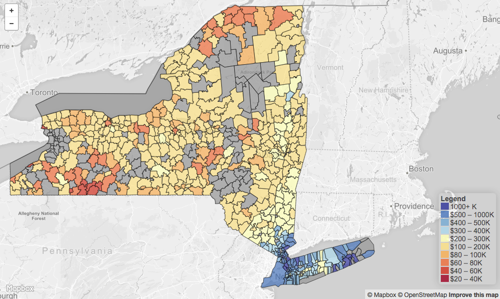
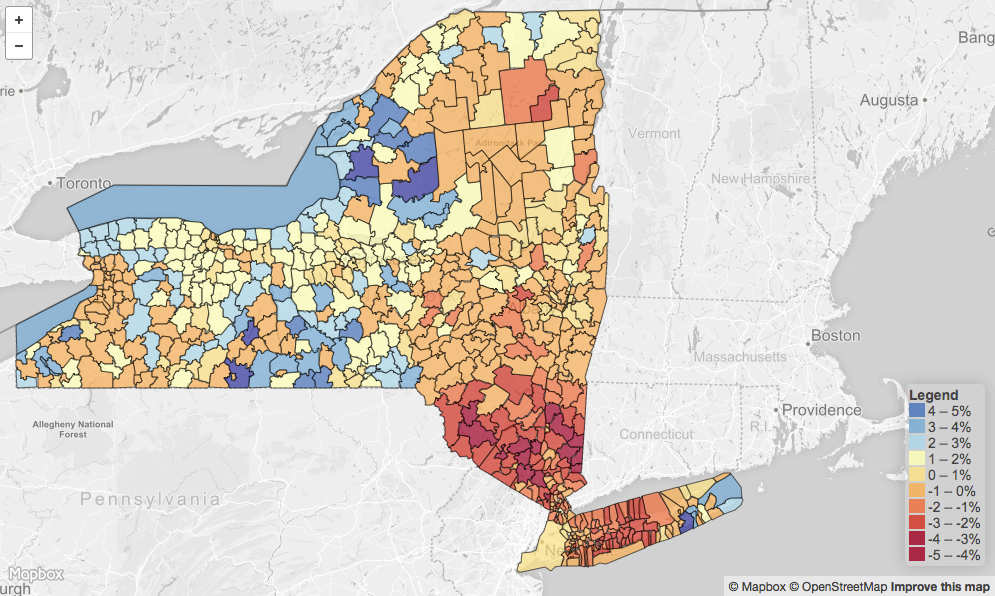
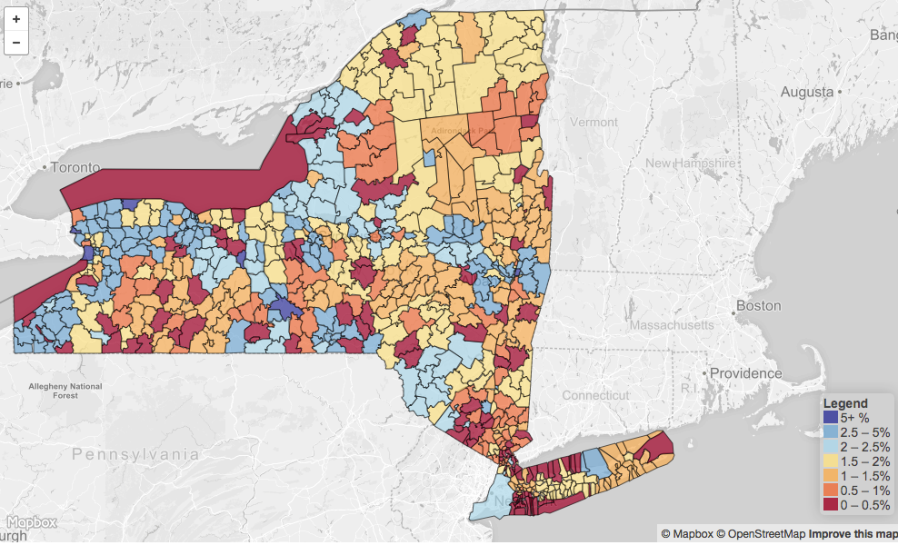
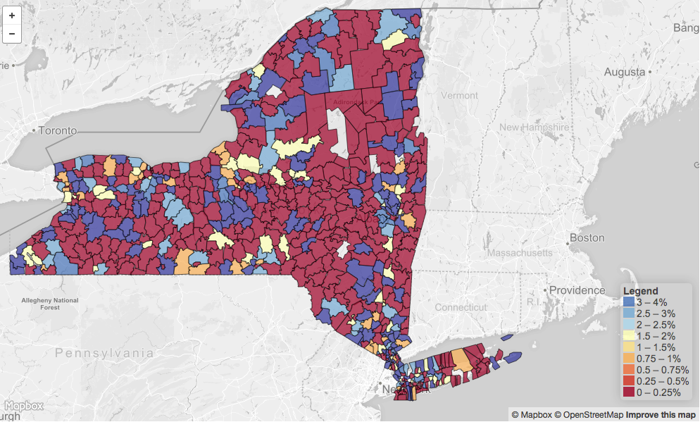

Median Home PriceMedian home prices in NY state span a wide range, from $20K to $2.5 million. Prices are highest for New York City and surrounding suburbs. |

Return on Investment (ROI)Annual ROI for the period 2006-2016 indicates negative ROIs (-2 to -5%) for New York City and surrounding suburbs, suggesting home prices have not yet recovered from the 2007 housing market crash. |

Crime RateCrime rates are evenly distributed, with no significant correlation with proximity to cities. |

School PerformanceSchool performances (measured here using % of 8th-grade students with math scores in top quantile among all-state cohort) are evenly distributed with no observable geographical correlation. |